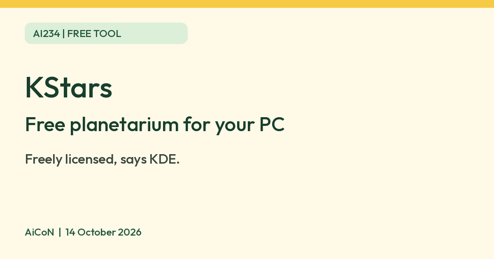

KStars: free planetarium software for your computer
KDE describes KStars as freely licensed, open source astronomy software. The download page lists Windows, macOS and Linux.

Historical KStars icon
What it is
KStars is free planetarium software for your computer. The KDE community, an open source project, makes it. Its homepage calls it "the most feature-rich free astronomy software". It is not an AI tool. We included it because it is a free tool from an official source.
Is it free?
Yes. The KDE apps page describes KStars as "freely licensed, open source, cross-platform Astronomy Software by KDE". We found no paid tier on the pages we read.
Which devices
- The KStars download page lists Windows, macOS and Linux, plus a source tarball. The current version it shows is 3.8.5, released 3 October 2026.
- We did not find a phone or tablet version on the download page.
Privacy and data
- KDE's software privacy policy says KDE software, as a general rule, does not send information off your device except as a result of an explicit action by you, such as visiting webpages or downloading content.
- The general policy also permits periodic checks that can be disabled, sending only needed information. Its Get Hot New Stuff addon feature sends search terms and sort order to KDE Store when used. These are policy statements, not a KStars-specific traffic test.
- It says any telemetry in KDE software is opt-in and off by default.
- The policy says copies from third-party distributors may differ. Download from the official page.
India
- We found no India-specific statement or age limit on the pages we read.
Frequently asked questions
Is KStars free?
Yes. KDE describes it as freely licensed, open source software.
Does it work on a phone?
The download page lists Windows, macOS and Linux only.
Is it AI?
No. It is planetarium software. We included it because it is a free tool from an official source.
How to start
- Open the KStars download page and choose Windows, macOS or Linux. Check the linked installer or distribution requirements before downloading.
- Install using the instructions for your platform. On Linux, the official page points to your distribution's package manager.
- Start with the sky view and set a location, date and time to explore. You do not need to connect a telescope to begin.
- Read the official help before using telescope or astrophotography controls. AiCoN did not test installation, system requirements or hardware compatibility.
What changed since this post?
Homepage, download page, KDE apps page and general KDE privacy policy rechecked on 14 October 2026. KStars' own pages list 3.8.5 released 3 October; the apps page's development banner and nightly builds are disclosed. Historical icon licence/copy added. Periodic checks and addon-search data caveats added. India availability, system requirements and actual software traffic remain unchecked.
Sources: KStars, Download, KDE apps page, KDE privacy policy. Checked 14 October 2026.
Icon: KStars icon (Oxygen team, author per Commons uncertain), GPL v2 or later, via Wikimedia Commons. An older icon, not the current KStars logo. Independent guide, not affiliated.